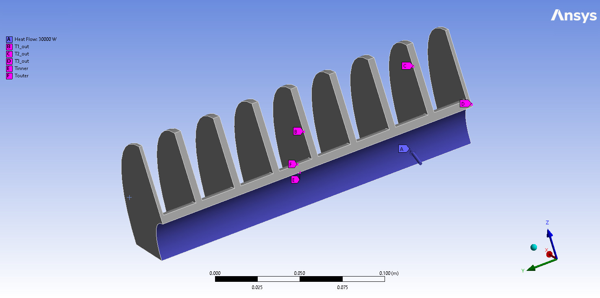

Note
Click here to download the full example code
Parametric response surface ROM Twin evaluation example#
This example shows how you can use PyTwin to load and evaluate a Twin model and simulate multiple parametric variations. The model is based on a Response Surface ROM created out of a steady state thermal model of a heat exchanger. The model takes as input the heat flow supplied on the inner face and outputs several temperature probes (inner temperature, 3 temperature probes within the solid and outer temperature). The model will be tested against different input values to evaluate the corresponding temperature responses
{kind=link}
# sphinx_gallery_thumbnail_path = '_static/heatExchangerRS.png'
Perform required imports#
Perform required imports, which includes downloading and importing the input files
import matplotlib.pyplot as plt
import numpy
import pandas as pd
from pytwin import TwinModel, download_file
twin_file = download_file("HeatExchangerRS_23R1_other.twin", "twin_files")
User inputs#
Defining user inputs and simulation settings
heat_flow_min = 0.0
heat_flow_max = 50000.0
step = 50.0
Auxiliary functions definition#
Definition of plot_result_comparison for post-processing the results
def plot_result_comparison(results: pd.DataFrame):
"""Compare the results obtained from the different input values evaluated on the TwinModel. The
results dataset are provided as Pandas Dataframe. The function will plot the different results for few particular
variables of interest"""
pd.set_option("display.precision", 12)
pd.set_option("display.max_columns", 20)
pd.set_option("display.expand_frame_repr", False)
color = ["g"]
# output ordering : T_inner, T1_out, T_outer, T2_out, T3_out
x_ind = 0
y0_ind = 1
y1_ind = 2
y2_ind = 4
y3_ind = 5
y4_ind = 3
# Plotting the simulation results (outputs vs input)
fig, ax = plt.subplots(ncols=1, nrows=1, figsize=(18, 7))
fig.subplots_adjust(hspace=0.5)
fig.set_tight_layout({"pad": 0.0})
axes0 = ax
results.plot(x=x_ind, y=y0_ind, ax=axes0, ls="-.", label="{}".format("T inner"))
results.plot(x=x_ind, y=y1_ind, ax=axes0, ls="-.", label="{}".format("T1"))
results.plot(x=x_ind, y=y2_ind, ax=axes0, ls="-.", label="{}".format("T2"))
results.plot(x=x_ind, y=y3_ind, ax=axes0, ls="-.", label="{}".format("T3"))
results.plot(x=x_ind, y=y4_ind, ax=axes0, ls="-.", label="{}".format("T outer"))
axes0.set_title("Heat Exchanger thermal response")
axes0.set_xlabel(results.columns[x_ind] + " [W]")
axes0.set_ylabel("Temperature [deg C]")
# Show plot
plt.show()
Loading the Twin Runtime and instantiating it#
Loading the Twin Runtime and instantiating it.
Loading model: C:\Users\ansys\AppData\Local\Temp\TwinExamples\twin_files\HeatExchangerRS_23R1_other.twin
Evaluating the Twin with different input values and collecting the corresponding outputs#
Since the Twin is based on a static model, 2 different options can be considered :
setting the initial input value to evaluate and run the initialization function (current approach)
create an input dataframe considering all the input values to evaluate and run the evaluate batch function
(in that case, a time dimension needs to be defined arbitrarily to execute the transient simulation)
results = []
input_name = list(twin_model.inputs.keys())[0]
for dp in numpy.linspace(start=heat_flow_min, stop=heat_flow_max, num=int((heat_flow_max - heat_flow_min) / step + 1)):
# Twin initialization with the right input values and collection of initial outputs values
dp_input = {input_name: dp}
twin_model.initialize_evaluation(inputs=dp_input)
outputs = [dp]
for item in twin_model.outputs:
outputs.append(twin_model.outputs[item])
results.append(outputs)
if dp % 1000 == 0.0:
print("Simulating the model with input {}".format(dp))
sim_results = pd.DataFrame(results, columns=[input_name] + list(twin_model.outputs), dtype=float)
Simulating the model with input 0.0
Simulating the model with input 1000.0
Simulating the model with input 2000.0
Simulating the model with input 3000.0
Simulating the model with input 4000.0
Simulating the model with input 5000.0
Simulating the model with input 6000.0
Simulating the model with input 7000.0
Simulating the model with input 8000.0
Simulating the model with input 9000.0
Simulating the model with input 10000.0
Simulating the model with input 11000.0
Simulating the model with input 12000.0
Simulating the model with input 13000.0
Simulating the model with input 14000.0
Simulating the model with input 15000.0
Simulating the model with input 16000.0
Simulating the model with input 17000.0
Simulating the model with input 18000.0
Simulating the model with input 19000.0
Simulating the model with input 20000.0
Simulating the model with input 21000.0
Simulating the model with input 22000.0
Simulating the model with input 23000.0
Simulating the model with input 24000.0
Simulating the model with input 25000.0
Simulating the model with input 26000.0
Simulating the model with input 27000.0
Simulating the model with input 28000.0
Simulating the model with input 29000.0
Simulating the model with input 30000.0
Simulating the model with input 31000.0
Simulating the model with input 32000.0
Simulating the model with input 33000.0
Simulating the model with input 34000.0
Simulating the model with input 35000.0
Simulating the model with input 36000.0
Simulating the model with input 37000.0
Simulating the model with input 38000.0
Simulating the model with input 39000.0
Simulating the model with input 40000.0
Simulating the model with input 41000.0
Simulating the model with input 42000.0
Simulating the model with input 43000.0
Simulating the model with input 44000.0
Simulating the model with input 45000.0
Simulating the model with input 46000.0
Simulating the model with input 47000.0
Simulating the model with input 48000.0
Simulating the model with input 49000.0
Simulating the model with input 50000.0
Post processing#
Plotting the different results and saving the image on disk
plot_result_comparison(sim_results)

Total running time of the script: ( 0 minutes 2.125 seconds)